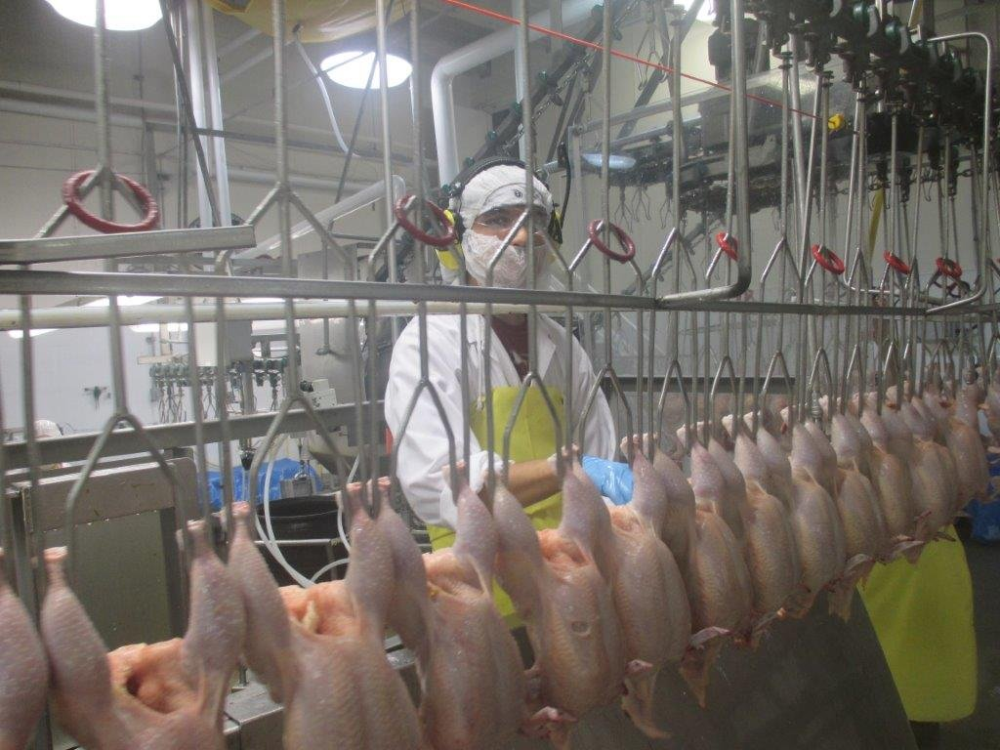

Your job is to determine the facts — not to prove wrongdoing

A workplace investigation is a structured process for gathering and reviewing facts so you can understand what actually happened before you decide what to do about it. As a frontline supervisor, you carry out these fact-finding steps regularly — often without calling it an "investigation."
The same FIND process applies across all of them. Click each type to see what it typically involves.